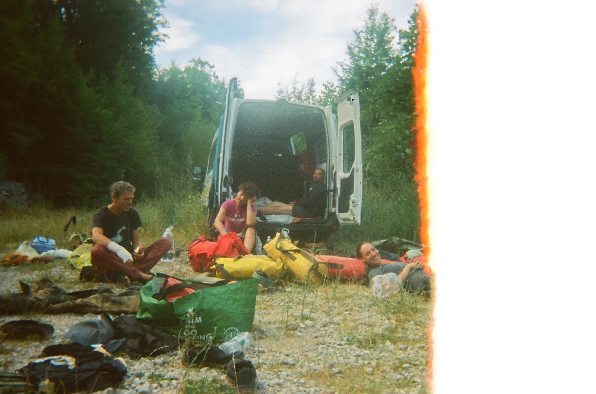

Bez soma nema doma
Najavljena je Munižaba i odmah sam shvatio da 3 dana u prekrasnoj jami i dobra ekipa znače samo jedno - valja prodati dušu vragu.

Napisao: Stjepan Schonberger
Fotografije: Lukas & Roko
Sudionci izleta: Lukas Grbac Lacković, Damir Lacković, Ana Bakšić, Petra Jagodić, Luka Havliček, Roko, Stjepko, Olga Jerković Perić (SOV), Venio Fabijančić (SUE) Joviša Bajić (Ponir)
Najavljena je Munižaba i odmah sam shvatio da 3 dana u prekrasnoj jami i dobra ekipa znače samo jedno - valja prodati dušu vragu. Preokrenuo sam rasporede, obveze, obećao sve što sam mogao, ispričao se kome sam stigao i prijavio se!
Uz puno samokontrole nisam gubio glavu i polako sam prikupljao informacije koje su mi nedostajale, poput kako se spava u jami, što ponijeti od odjeće, što od hrane, a što od opreme. što ide u jamu što ostaj ispred nje. Shvatio sam da zasad imam osnovnu speleo-opremu i volju.
Srećom, pa su me Petra, koja je nedavno bila i Ana koja je 100 puta bila detaljno uputile u popise svega što treba. Na popis su došle i dvije mačete, tu sam se malo zabrinuo što očekujemo susresti u jami, ali ispostavilo se da je ipak za krčenje puta do jame.
Planirano je bilo ući u petak, a vratit se u život u ponedjeljak, nešto kao srednjoškolski vikend, no najavljena obilna kiša u ponedjeljak je pogurala planove. Skupili smo se potrpali u kombi u Zagrebu Ana, Mrci, Lukas, Olga, Petra, Roko i ja (te naravno dvije mačete) pa ugodnom vožnjom autocestom, državnom cestom i jedva cestom stigli navečer do okretaljke kod Kite Gaćešine. Tamo nam se pridružio i Venio iz SU Estavela.
Bilo je kasno, ali je odluka pala da ulazimoooo. I tako smo spremili opremu, odvojili što ide, što ne ide, pa opet skupili, pa odvojili što ide, a što ne ide, pa još malo bacali tu i tamo neke stvari. Konačno spremni, isukali smo mačete i kao u filmu Indiana Jones u suton krčili put kroz džunglu južnog velebita u potrazi za blagom. Blago smo nakon malo lutanja pronašli taman kada je pao mrak, tako da spust u jamu pamtim samo kao neprekidnu sliku užeta, stijene i sidrišta.
Uže je teško prolazilo kroz descender, pa je bilo teško silaziti, ali nakon neke, meni nepoznate količine vremena, stupio sam na tlo, dno, nešto čvrsto, odakle više nije bilo užeta koje ide niže. Čuo sam samo Anin glas iz mraka i daljine kako govori: “Idi desno, idi desno”. I tako sam otišao lijevo po prečki do kraja i shvatio da se spuštamo kao po siparu niže u utrobu Zemlje.
Na kraju spusta nalazilo se neki procjep u koji sam vidio kako ulazi Ana i nestaje, pa sam nestao i ja. Bio je to ulaz u posve novi, predivni svijet.
Do bivka hodali smo lagano preko sipara, glondži, oko i kroz jezerca, a vrijeme nam je kratila Ana opisima lokaliteta i prijašnjim istraživanjima,tako da smo se osjećali kao na lijepoj turističkoj turi. Već oko 1:30 stižemo do bivka, a tamo već u vrećama i dubokom snu prva ekipa, pridružujemo se i mi. Izazovno je bilo iz posve mokre kordure i svih slojeva na sebi ući u nešto suho i zagrijati se u vreći, ali išlo je nekako. Bilo je mračno kao u rogu, to je bilo ok, ali je bilo glasno, jer smo skupljali vodu što sa svoda kaplje. kap, kap, kap, pljuć. Sanjao sam da sam u satnom mehanizmu i pokušavam ga popraviti.
Subota je krenula rano (barem sam se tako osjećao), Olga je prva započela s pripremama i opremanjem sebe, pa su joj se svi polako pridružili, uz doručak pada plan. Napadačka sekcija ide u preopremanje i istraživanje, a logistička sekcija će preopremiti bivak i skuhati nešto toplo.
Vrijeme neobično teče u jami, dan smo proveli izrađujući stol za hranu od kamenih ploča i prebacujući kuhinju na drugi dio, te slažući zalihe. Zatim je trebalo naći i urediti mjesto za spavanje, jer je na dosadašnje počela kapati voda. Srećom pronašli smo mjesto koje smo malo popunili kamenjem, a malo iskopali, pa dobili još tri mjesta za spavanje
Taman kad smo krenuli isprobati nova mjesta za spavanje stigli su Luka i Joviša, iz Lukine jamu u Munižabu. Legendarno. Luka je odmah krenuo u preopremanje ulaz u dio koji se istražuje, a Joviša se priključio timu logistika.
Petra i ja tada smo krenuli u epsku avanturu punjenja vode u jezeru. Otišli smo 50-ak metara od bivka, našli jezerce sa svježom vodom i krenuli puniti boce. To je potrajalo, pa smo vidjeli kanal koji vodi dolje do većeg jezera. Malo nas je povukao istraživački duh pa smo se spustili koliko smo mogli, nakon petrinog nenamjernog klizanja stražnjicom po blatu ipak odlučujemo da to jezero ipak nije toliko zanimljivo i vraćamo se punjenju vode. Riječ dvije nakon toga, čujemo Anine povike i shvatimo da smo izgubili pojam u vremenu i pričamo kao dvije cure na izvoru, a Ana se brine da se nismo izgubili.
Skuhali smo večeru ili neki slični obrok, teško je reći kad je stalno mrak. Još smo malo istraživali prostor i kanale u blizini bivka, i taman krenuli na počinak kad je stigla udarnička ekipa. Vratili su se blatni i sretni, uspjeli su odraditi velik posao, istražili, nacrtali i opremili, a sutra planiraju još! Brzo su pojeli pripremljenu juhu i tjesteninu, pa je u bivku ostao samo zvuk kapi koje pune posude. kap, kap, kap, pljuć
Olga kao vjesnik dobrog dana prva ustaje i pokreće ekipu, Ana radi doručak, pohance u bućinom ulju, što mami osmijehe na svim licima. Mrci koji je jučer ozlijedio ruku prelazi u tim logistike. Istraživači Olga, Lukas, Venio odlaze vidjeti koliko novih metara mogu otkriti i nacrtati, a logistika ostaje spremiti bivak i kreće u izlazak.
Tijekom vraćanja više koristio naglavnu, a i glavu, pa sam mogao bolje promatrati okolinu kroz koju prolazimo, a Ana je nadopunila sve s detaljima iz prijašnjih istraživanja. Bilo je prekrasno gledati kako se izmjenjuju veliki prostor, kanali, jezerca, glondže i razni ljudi u priči koji su sve ovo mukom otkrivali.
Kao šećer na kraju došla je izlazna vertikala, da je izlazna ništa nije dalo naslutiti, jer nije bilo ni traga svjetlu, a da je vertikala odmah se vidjelo. Uz Aninu pomoć upogonio sam zaduženi pantin i polako krenuo gore. I tako sam polako prolazio sve one stijene koje u petak nisam uspio ni pogledati, dok nisam iznad sebe vidio malo svjetlo poput naglavne lampe koje se sa svakim podizanjem (i stiskanjem kukava stijeni kako je rekla Ana) povećavalo. Polako sam se vraćao u vanjski svijet. Poseban je osjećaj nakon 2 dana mraka i tišine (izuzimajući Petru i kapanje vode) vidjeti nebo, čuti zujanje kukaca i osjetiti toplinu dana.
Ekipa koja je izašla već je primila prvu boju dok sam se pun dojmova uspeo preko zadnje stijene. Popili smo vode, pojeli nešto slano i naoružani s dvije mačete odlučno kročili prema kombiju. Odlučili smo iskoristiti vrijeme i temeljito očistiti zadni dio put prema jami koji je dosta zarastao i težak za orijentaciju. Uspješno smo iskrčili put, stigli do kombija. konačno se presvukli u nešto drugo i naravno, jeli. Bivakirali smo pod obližnjom nadstrešnicom uz jedinu vodu na Crnopcu, srećom nije je više bilo pa su i životinje slabo dolazile.
Budimo se rano i iščekujemo ostatak ekipe koji imaju limit da se jave do 6h ujutro ili kreće akcija spašavanja. Srećom u 5:12 javljaju se da su živi i zdravi izašli. Iako su već 20h budni odlučuju da neće spavati nego da idemo u Gračac na doručak i kavu. Još su uzbuđeni i pod dojmom, a kako i ne bi bili itražili su dodatnih 640 m! Stvarno hvalevrijedan podvig.
Pijemo kavu jednu, pa drugu, prepričavamo sve što se događalo i gledamo u nebo, jer izgleda kao da će kiša, a valjalo bi opremu oprati. Odlučujemo opremu oprati u Veljunu na Korani. Opraštamo se od Petre i Venija koji idu za Rijeku, a mi kombijem polako krećemo ličkom magistralom prema Zagrebu.
Da je put do Zagreba bio zanimljiv, da, bio je, ali gdje bi sve stalo da pišemo o kotaču koji se pregrijava, njegovom stalnom diranju i provjeravanju temperature, oluji u Korenici od kojese iz rasvjete na stropu benzinske slijevaju vodopadi, dugom čekanju u koloni kod Veljuna, podizanju opreme u Karlovcu, obilasku južnih krajeva zagrebačke okolice izbjegavajući gužvu na autocesti. To nekom drugom prilikom, uz pivo.
Munižabo, drago mi je bilo, nadam se da ćemo se uskoro vidjeti opet!
A evo i toponima koje smo smislili, jer se postalo teško snalaziti u ovi novim, dosad bezimenim, djelovima jame:
Alpinistička perspektiva - nazvano po alpinistima Bruni i Lukasu koji su naboli ovaj upitnik
Dolina suza - tu su teško prolazna suženja zbog kojih su mnogi plakali
Dvorana Mudonja - mud = blato na engleskom, a pod dvorane je prekriven debelim brežuljcima blata/sedimenta a i treba imat muda doći do ovdje
Penj Not now - trenutno ima i lakše dostupnih upitnika pa ovo ostaje za neka druga vremena
Bjengardovka - lijepo mjesto gdje sam davno bila i ovaj kanal me na to podsjetio
Veni, vidi, vici - kad je potrošio svu špagu , Venio je opremio neki skok sa zamkom da bi mogli ući u dugačak horizontalni kanal
Djeca i invalidi - po sudionicima izleta
Mega tobogan - mega tobogan
Bez soma nema doma - već se bližilo dogovoreno krajnje vrijeme povratka iz istraživanja, ali ostali smo crtati do posljednje sekunde i stalno zbrajali metre u nadi da će doći do 1000 za ovu dvodnevnu akciju.
Cijeli taj dio se zove KaKita jer se nadamo da ide ka Kiti.